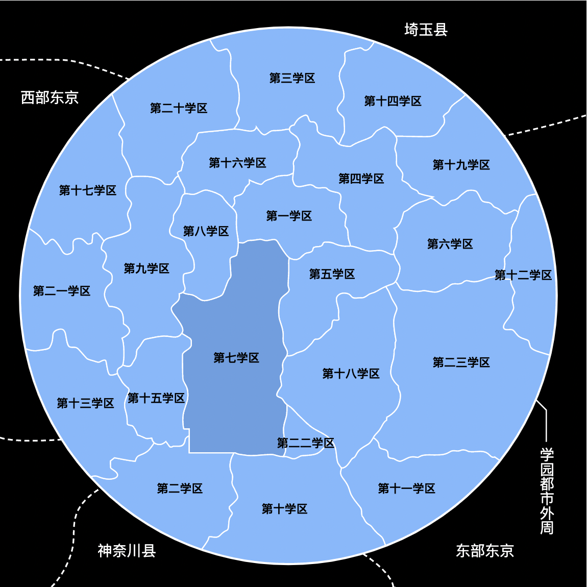

第一学区：
以行政机关为主的学区，感受不到其他学区所拥有的生活气息。
第二学区：
重工业色彩强烈的学区。
爆炸物或武器的试验场、警备员和风纪委员的训练所所在的学区。
第二学区是机密最多的学区。
学区周围环绕着高耸的隔音墙，而且这地方还拥有能发射逆相位音波来消除噪音的设备
第三学区：
第三学区内有许多对外设施，有好几间国际展示场，饭店的档次在学园都市内也是数一数二。
基于不让机场噪音影响住宿设施的考虑，学园都市特地将迎宾设施安排在距离机场集中的第二十三学区很远的第三学区，
作为对外门户的第二十三学区里有铁道直通第三学区
第七学区＜学校相关＞
- 某高中(当麻所在学校)
- 学舍之园
- 常盘台中学(美琴所在学校)
- 枝垂樱学园
- 栅川中学
- 常盘台中学学生寮
风纪委员第一七七支部
水穗机构病理解析研究所
S制药公司脑神经应用分析所
第十学区：
第十学区在学园都市中，以地价最便宜，治安也最糟糕而闻名。
因为这里地价便宜，所以充满各种“其他学区敬而远之”的设施，是个核能、细菌研究设施以及实验动物焚化场林立的学区。
学园都市唯一的墓地和少年感化院就坐落在这个学区。
其他学区：